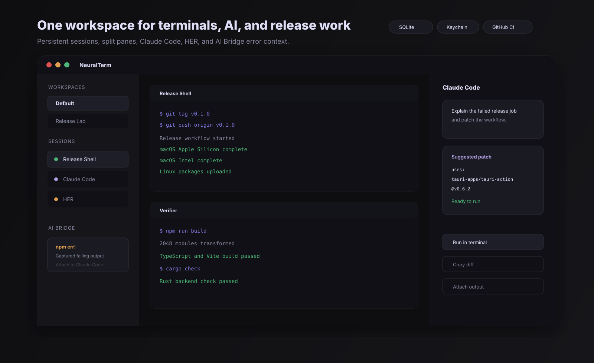

Real PTY terminals
Rust backend commands spawn, resize, write to, and kill shell sessions through `portable-pty`.
Desktop terminal workspace for macOS, Windows, and Linux
NeuralTerm combines real PTY-backed terminals, split panes, persistent workspaces, Claude Code sessions, HER, and AI Bridge error capture in a focused Tauri desktop app.
Product tour
Shell sessions, AI sessions, and bridge alerts use the same session model. That makes it fast to move from a failing command to a Claude-assisted fix without losing the exact terminal context.

Feature set
Rust backend commands spawn, resize, write to, and kill shell sessions through `portable-pty`.
Horizontal and vertical splits keep build commands, logs, and verification shells visible together.
SQLite stores workspaces, sessions, collapsed state, activity, and AI message history.
AI panes support markdown, attachments, shell helpers, voice input, and run-in-terminal code blocks.
Anthropic credentials live in the OS keychain in the desktop app, with browser fallback for preview mode.
Version tags trigger macOS, Windows, and Linux builds through GitHub Actions and Tauri bundling.
AI Bridge
AI Bridge watches terminal output for tracebacks, panics, `npm ERR!`, permission failures, fatal git errors, segmentation faults, and failed command hints. When it finds one, it captures a compact excerpt and offers to attach it to Claude Code.
Build, test, git, and runtime logs stream through the PTY reader.
Errors and failure text are throttled into concise suggestions.
Claude Code opens with the captured terminal context attached.
Architecture
Top bar, sidebar, command palette, settings, terminals, and AI panes.
Sessions, workspaces, splits, settings, and bridge suggestions.
IPC layer for persistence, PTY lifecycle, shell helpers, and keychain access.
`portable-pty`, `sqlx`, `keyring`, `tokio`, and event emission.
Durable app state in the platform app data directory.
Matrix builds produce release assets for each desktop platform.
Get the app
The first release is published with macOS, Windows, and Linux assets. Signing and notarization are still pending, so operating systems may show trust warnings.
Open GitHub release